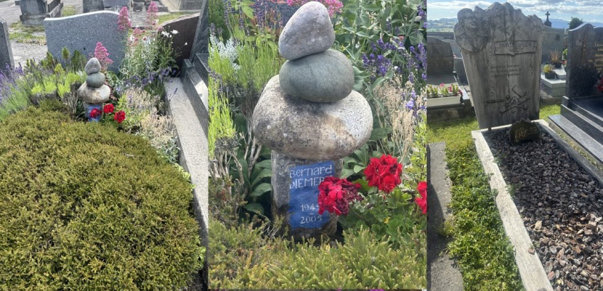
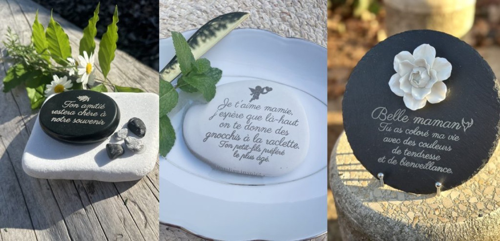

Longtemps, les cimetières ont été perçus comme des lieux austères, où dominaient le marbre et le silence. Aujourd’hui, les mentalités évoluent. De plus en plus de familles souhaitent rendre hommage à leurs proches d’une manière plus personnelle, plus douce et plus proche de la nature.
Les cimetières végétalisés se développent, laissant davantage de place aux arbres, aux fleurs, aux matériaux naturels et au retour à la terre. Cette évolution répond à une envie de créer des espaces apaisants, où le souvenir s’inscrit dans le cycle de la vie.

Les hommages changent eux aussi. On célèbre moins la disparition et davantage les moments partagés, les passions, les sourires et tout ce qui a fait la richesse d’une vie. Une citation, un dessin d’enfant, un oiseau, un cœur ou un galet gravé racontent une histoire unique et permettent de maintenir un lien avec ceux qui nous ont quittés.

À L’Atelier Inspire, cette vision guide chacune de mes créations. J’imagine des objets personnalisés, inspirés par la nature et conçus pour traverser le temps, afin que chaque lieu de mémoire reflète avant tout l’amour, les souvenirs et la personnalité de l’être aimé.
Parce qu’au-delà du deuil, un lieu de mémoire peut aussi devenir un lieu de vie, de promenade, de recueillement… et de beaux souvenirs.